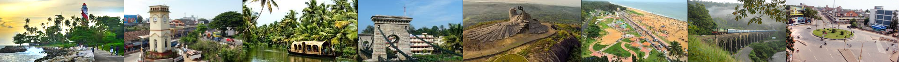

The place is naturally beautiful and is surrounded by hills and valleys. In the midst of the hills is the Fresh Water Lake. The extensive freshwater lake here is the biggest of its kind in Kerala. Water supply to the Kollam town is met by purifying the water from this lake.

Jatayu Adventure Center, at Chadayamangalam, 50 km from Trivandrum, Kerala, is a unique entrant in the tourism map of India. The destination is a masterpiece combination of artistry, mythology, technology, culture, adventure, leisure and wellness put together to give every visitor a spellbinding experience.

Thenmala is India’s first planned eco-tourism destination. Located in the foothills of the Western Ghats, in Kerala’s Kollam district, Thenmala is also a UNESCO World Heritage Site.A government-managed facility, this unique destination offers great opportunities for adventure and leisure, along with being one with nature.

Palaruvi Waterfalls, which literally translates to ‘Stream of Milk’, comes down through rocks from a height of 300 feet. This has turned into a delightful picnic spot where one can enjoy a spectacular view uninterrupted.The cool water is frequented by those seeking a refreshing dip and it regularly attracts people in large numbers.